<nz-layout class="layout">
  <nz-header style="position:fixed; width:100%;">
    <div class="logo">
      
      <span class="logo-name">项目管理平台</span>
      <span class="realname">管理员</span>
      <span class="avatar">
          <nz-avatar nzIcon="anticon anticon-user" nzSrc="../../assets/images/touxiang.jpg" nz-popover [nzContent]="contentTemplate" nzTrigger="click"></nz-avatar>
      </span>
      <ng-template #contentTemplate>
        <div>
          <a >我的信息</a>
          <a (click)="logout()">退出登录</a>
        </div>
      </ng-template>
    </div>

  </nz-header>
  <nz-layout>
    <nz-sider [nzWidth]="200" style="overflow: hidden; height: 100vh; position: fixed; left: 0">
      <ul nz-menu [nzMode]="'inline'" style="height:100%">
        <li nz-menu-item class="ant-menu-item ant-menu-item-selected" routerLink="my">
          <span class="menu-size">
            <i class="anticon anticon-file"></i>
            <span class="nav-text">个人桌面</span>
          </span>
        </li>
        <li nz-submenu>
          <span title class="menu-size"><i class="anticon anticon-laptop"></i>项目概况</span>
          <ul>
            <li nz-menu-item>项目列表</li>
            <li nz-menu-item>项目关系管理</li>
            <li nz-menu-item>参见单位与人员管理</li>
            <li nz-menu-item>项目报表管理</li>
          </ul>
        </li>
        <li nz-submenu>
          <span title class="menu-size"><i class="anticon anticon-notification"></i>数据分析</span>
          <ul>
            <li nz-menu-item>option9</li>
            <li nz-menu-item>option10</li>
            <li nz-menu-item>option11</li>
            <li nz-menu-item>option12</li>
          </ul>
        </li>
        <li nz-submenu>
          <span title class="menu-size"><i class="anticon anticon-notification"></i>系统设置</span>
          <ul>
            <li nz-menu-item  routerLink="dept">部门设置</li>
            <li nz-menu-item >岗位设置</li>
            <li nz-menu-item  routerLink="user">用户设置</li>
            <li nz-menu-item>角色设置</li>
          </ul>
        </li>
      </ul>
    </nz-sider>

    <nz-layout style="padding:0 24px 24px;">
      <nz-content class="content">
        <router-outlet></router-outlet>
      </nz-content>
    </nz-layout>
  </nz-layout>
</nz-layout>

